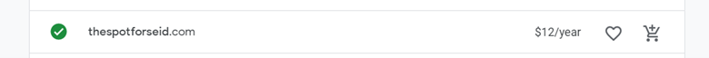

Site Purpose
The main purpose of the thespotforseid.com website will be to inform those visiting, living in the area, or curious about the weather in this area, of any community events, relevant news, current weather, and weather forecast.
Domain name
https://thespotforseid.com
Logo